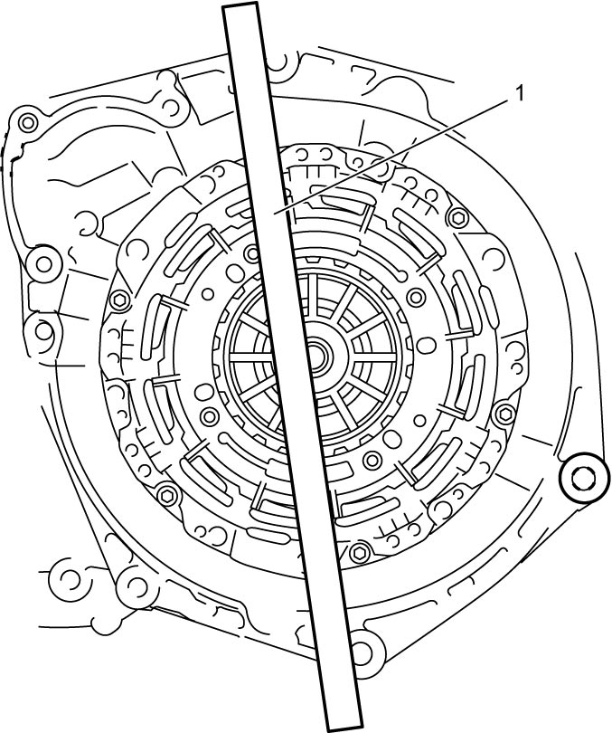
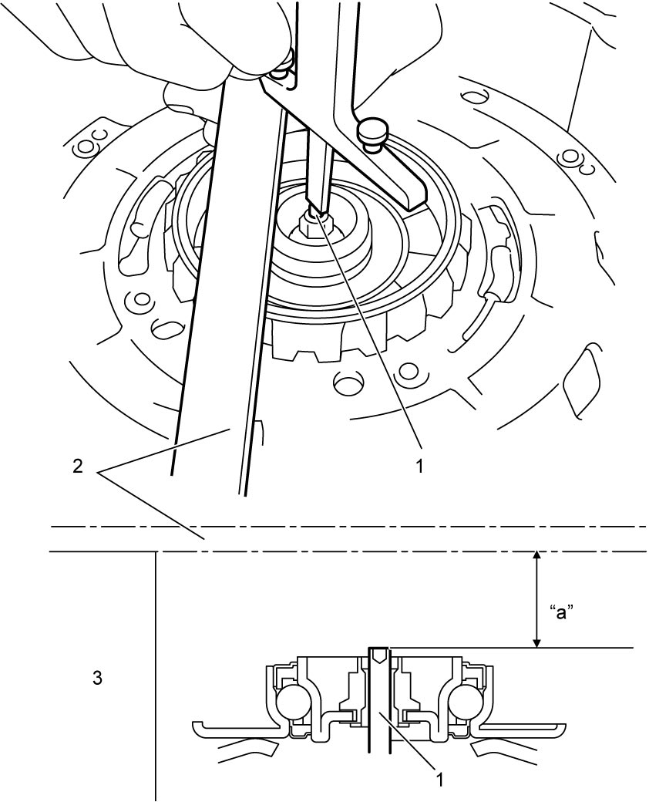
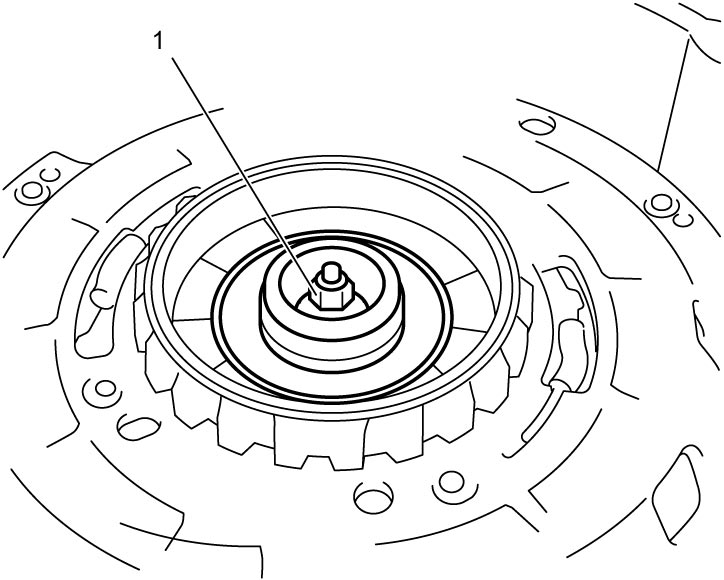

5F
| Odd Gear Clutch Control Actuator Rod Inspection and Adjustment |
1)Put straightedge (1) on clutch housing at specific position as shown in figure.


 "Expand image")
2)Measure depth “a” from lower end of straightedge (2) to top of odd gear clutch control actuator rod (1).

 "Expand image")
| 3. | Transaxle case |
Odd gear clutch control actuator rod position (depth from clutch housing surface to rod end)
“a”: 18.5 mm (0.73 in.)
3)If position of odd gear clutch control actuator rod is not as specified, adjust it to specified value by turning nut portion of thrust bearing (1) clockwise or counterclockwise.

 "Expand image")